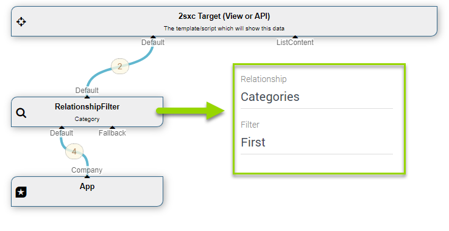
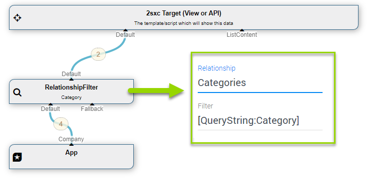
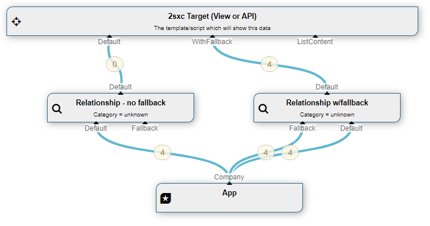
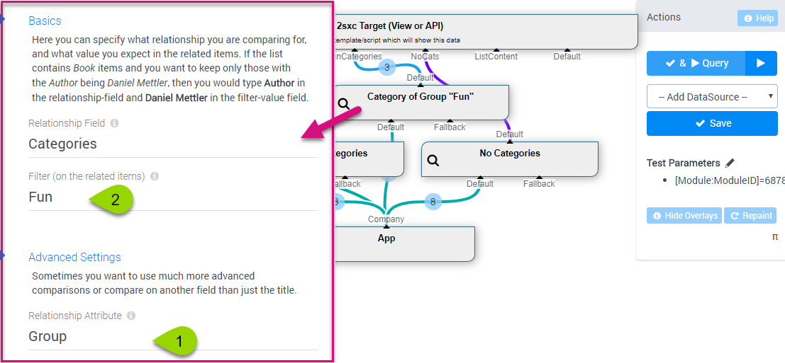
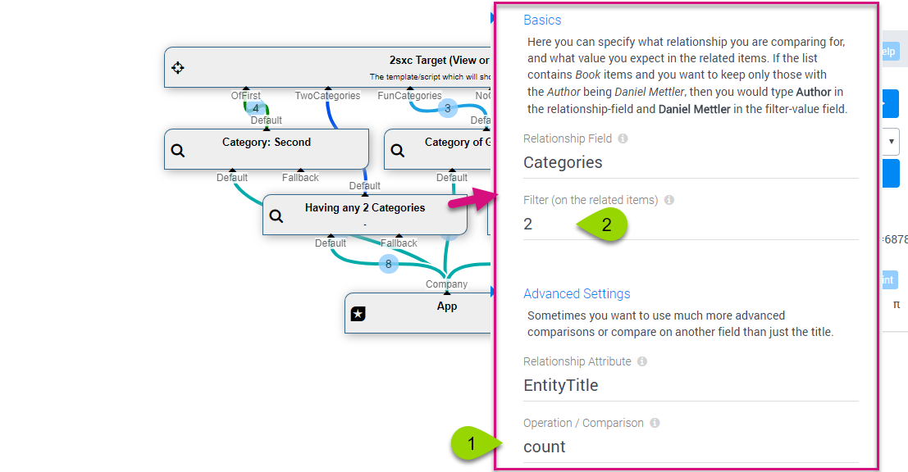

Class RelationshipFilter
- Namespace
- ToSic.Eav.DataSources
- Assembly
- ToSic.Eav.DataSources.dll
The base class for all DataSources, especially custom DataSources. It must always be inherited. It provides a lot of core functionality to get configurations, ensure caching and more.
Important: in most cases you will inherit the CustomDataSource DataSource for custom data sources.
The RelationshipFilter DataSource is part of the Standard EAV Data Sources. It will return only the items which have a relationship to another item - like books having an author, or blog-posts with the tag grunt.
How to use with the VisualQuery
When using the VisualQuery you can just drag it into your query. This is what it usually looks like:
Using Url Parameters
You can of course also use URL parameters for both the value as well as the field:
Using the Fallback
In case none of the items match the reqiurement, then either no items are returned, or those in the fallback stream:
You can find more fallback examples like chaining them in the ValueFilter DataSource
Separators for Multiple Criterias (2sxc 9.9+)
Until 2sxc 9.8 you could only check for 1 related item, so you could only say "give me all items which have this one author". In 2sxc 9.9 we are now able to specify multiple authors, allowing queries like "give me all items which have all these authors" or "give me all items which have any of these authors".
This works using the separation-character, which is usually a comma , but could be something different (in case your items have commas in the texts you're comparing). If you don't specify a separator, none will be used and the whole Filter criteria is treated as one value. Here's where you set it:
All Operators (2sxc 9.9+)
Untill 2sxc 9.8, you could not specify an operator, and contains was the assumed operator. In 9.9 we added a lot more. To explain what each does, assume that our main stream contains items of BlogPost and we only want to keep the posts having certain Tags.
Here's the list, each is explained more below:
contains- will return all items (BlogPosts), having all the children (tags) specifiedcontainsany- will return all items (BlogPosts) having any of the children (tags) specifiednot-containswill return all items (BlogPosts) not-having-all of the children (tags). So it will also return those items, having some of the children.not-containsanywill return all items (BlogPosts) having none of the children (tags) specified.anywill return all items (BlogPosts) having any children at all (tags). So the filter is ignored. This is the same as count=0.not-anywill return all items (BlogPosts) having no children (tags).firstwill return all items (BlogPosts) where the first child (tag) is one of the filter-options. This is for scenarios where you say the first tag is a primary-category or similar.not-firstwill return all items (BlogPosts) where the first children (tags) is not one of the filter values.countwill return all items (BlogPosts) having a specific amount of children (tags)not-countwill return all items (BlogPosts) not having a specific amount of children (tags)
Filtering On Fields other than Title and ID (9.9+)
In 2sxc 9.9 we added the ability to specify which field you want to compare (before it was always Id or Title). Here's an example:
Filtering by Relationship-Count (9.9+)
In 2sxc 9.9 we added the ability to filter by amount of relationships - so you could say "give me all blog-posts with exactly 2 tags":
Note: you can also reverse this, so instead of count you can use not-count to get all the items that don't match this requirement.
Filtering by Has-Any (9.9+)
In 2sxc 9.9 we added the ability to filter by
Limitations of the RelationshipFilter
Note that as of now (2sxc 9.9) the RelationshipFilter:
- can only seek child-items
Programming With The RelationshipFilter DataSource
We recommend to use the VisualQuery where possible, as it's easier to understand and is identical for C# and JavaScript. It's also better because it separates data-retrieval from visualization.
Read also
Demo App and further links
You should find some examples in this demo App
History
- Introduced in EAV 4.x, 2sxc ?
- Added AttributeOnRelationship (to compare other fields that title/id) in 2sxc 9.9
- Added separator to enable multi-filter in 2sxc 9.9
- Added various operators like
count,first,containsany,any,not-*in 2sxc 9.9
API Documentation
[PublicApi]
[VisualQuery(NiceName = "Relationship Filter", UiHint = "Keep items having a relationship matching a criteria", Icon = "share", Type = DataSourceType.Filter, NameId = "ToSic.Eav.DataSources.RelationshipFilter, ToSic.Eav.DataSources", In = new string[] { "Default*", "Fallback" }, DynamicOut = false, ConfigurationType = "|Config ToSic.Eav.DataSources.RelationshipFilter", HelpLink = "https://go.2sxc.org/DsRelationshipFilter")]
public sealed class RelationshipFilter : DataSourceBase, IDataSource, IAppIdentity, IZoneIdentity, IAppIdentityLight, ICacheKey, ICacheExpiring, ITimestamped, IHasLog, IDataSourceLinkable- Inheritance
-
objectServiceBaseRelationshipFilter
- Implements
- Inherited Members
Remarks
Had a major, breaking update in v15. Consult the guide to upgrade your custom data sources.
Properties
ChildOrParent
Determines if the relationship we're looking into is a 'child'-relationship (default) or 'parent' relationship.
[Configuration(Field = "Direction", Fallback = "child")]
public string ChildOrParent { get; set; }Property Value
CompareAttribute
The attribute we're looking into, in this case it would be 'Country' because we're checking what Authors are from Switzerland.
[Configuration(Field = "AttributeOnRelationship", Fallback = "entitytitle")]
public string CompareAttribute { get; set; }Property Value
CompareMode
Comparison mode. "default" and "contains" will check if such a relationship is available other modes like "equals" or "exclude" not implemented
[Configuration(Field = "Comparison", Fallback = "contains")]
public string CompareMode { get; set; }Property Value
Filter
The filter-value that will be used - for example "Switzerland" when looking for authors from there
[Configuration]
public string Filter { get; set; }Property Value
Relationship
Relationship-attribute - in the example this would be 'Author' as we're checking values in related Author items.
[Configuration]
public string Relationship { get; set; }Property Value
Separator
Separator value where we have multiple values / IDs to compare. Default is 'ignore' = no separator
[Configuration(Fallback = "ignore")]
public string Separator { get; set; }